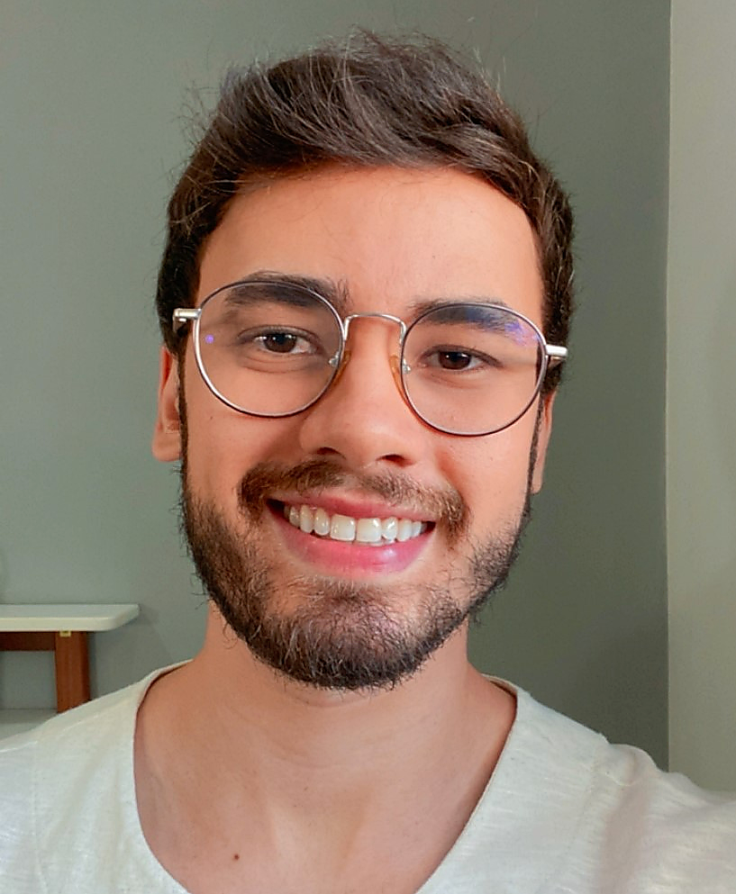

I'm a civil engineer with a master's degree in Computer Science, specialized in turning complex processes into scalable solutions through data, technology and management.
I graduated with sustainability as my compass: my final thesis was about sustainability in civil construction. Today I bring that same view to business, using technology for data control and process improvement so companies can grow sustainably.
I work at a construction software company, where I bring management, technology and construction together in the same job: I support construction planning, handle support team management and develop AI projects for customer service and support.
I led the rollout of the company's AI customer service, which resolved 30% of conversations in the very first month, and managed the transition from human to AI support. I also managed the Lean Efficiency in Construction Award project, 2nd place in the internal AI competition, won another 2nd place with a team AI project, and build internal solutions that automate workflows with Zendesk, Jira and AI platforms.
My focus is business sustainability: giving control over data and improving processes so the company grows without waste.
Day to day, that means project management with PMBOK, Scrum and Kanban, indicator tracking, process mapping in BPMN and data analysis for decision-making. I'm interested in strategic roles in Product, Project Management, Processes, Operations and Data.
I've been working since I was 17. Each stage added a piece: the technical side of maintenance, the math and science foundation from college, hands-on construction and, finally, technology applied to management.
I started as a telecommunications equipment maintenance intern, my first contact with a work routine, troubleshooting and problem solving.
During my Civil Engineering degree at IFCE, I was a research scholarship holder and a math and physics teaching assistant, helping classmates with the foundation courses.
My first experience in civil construction was an internship inspecting public works at SEINF, Fortaleza's Infrastructure Department.
I closed my degree studying how to make construction more sustainable, a theme that still guides my work today.
At a company that provided civil construction services to the City of Fortaleza, I followed construction and renovation projects, helping with site management, budgets and progress measurements.
At the construction software company where I work, I started by building clients' construction schedules and following project execution, with indicator management and a short, medium and long-term view.
I completed the Master Black Belt in Lean Construction, a postgraduate degree in Data Management and Analysis at PUC-MG and a master's in Computer Science at CIn-UFPE, with research in project management.
As a volunteer, I drafted the project charter, mapped processes in BPMN and organized deliverables in ClickUp, following PMBOK best practices.
I lead AI projects for customer service and support and manage the support team. I led the rollout of the virtual agent, which resolved 30% of conversations in the first month, the transition from human to AI support, and the Lean Efficiency in Construction Award, 2nd place in the company's internal AI competition.
Balance comes from the guitar, weight training, drawing and painting. Above all, from time with my family.
See the areas where I can contribute to your team or project.
See roles and résumés